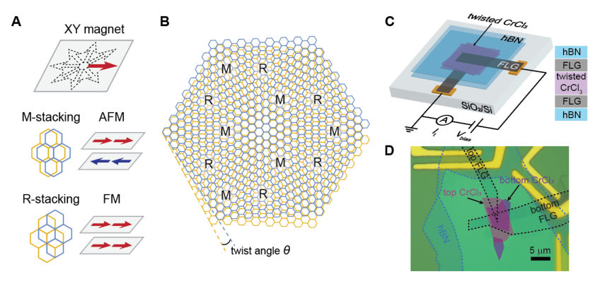
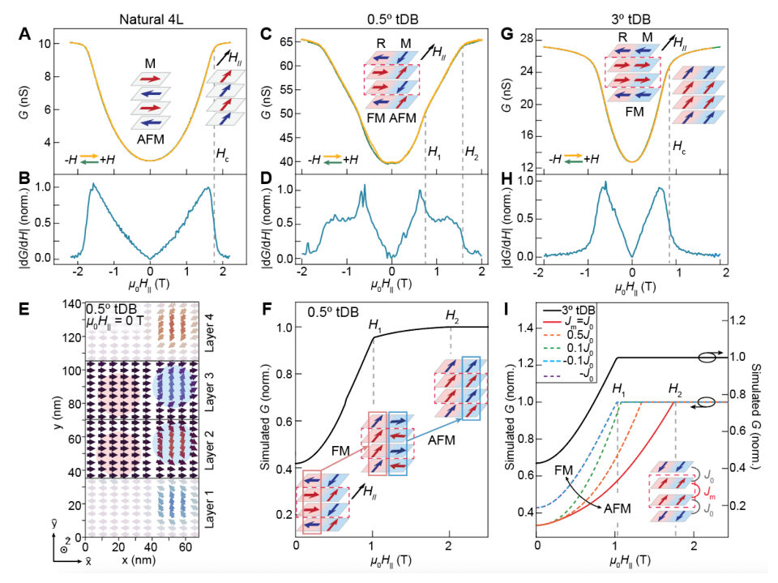

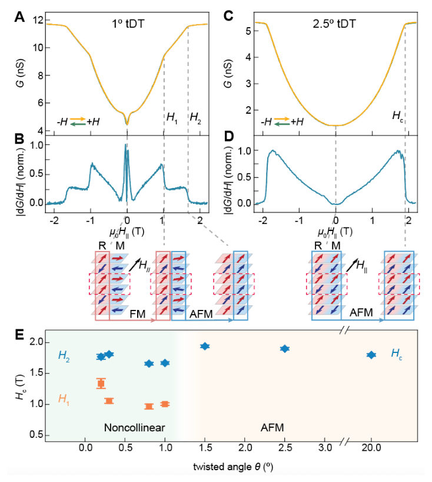
← Index · ← Previous · Next →
Authors: Maryam Mansouri, Vram Mughnetsyan, Armen Harutyunyan, Albert Kirakosyan, Vidar Gudmundsson
Type: theory · Category: other · PDF: https://arxiv.org/pdf/2606.01373v1
Analysis basis: full PDF text, analyzed in chunks
Topic relevance: 🔥 spintronics-quantum-optics interface 4/5 · analog quantum simulation 3/5 · correlated cavity matter 3/5 · exotic spin models in light-matter 3/5 · Tavis-Cummings & cavity-many-emitter 2/5 · driven-dissipative phase transition 2/5 · methods for driven-dissipative 2/5 · Keldysh / 2PI / non-Gaussian methods 1/5 · non-equilibrium dynamics 1/5
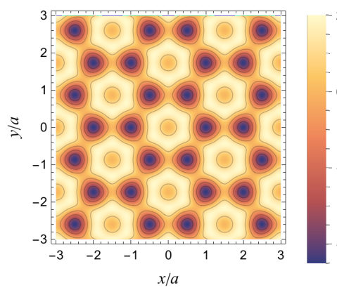
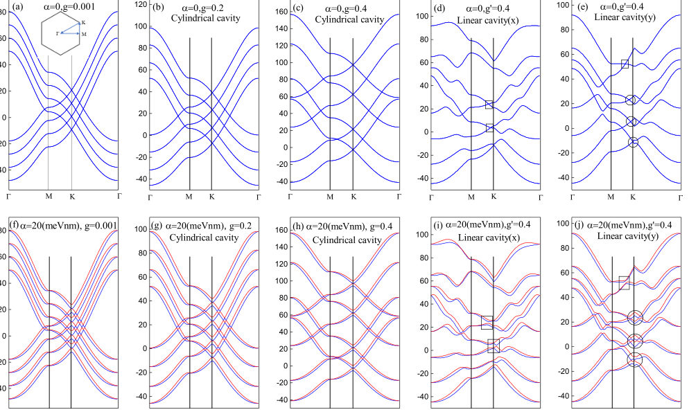
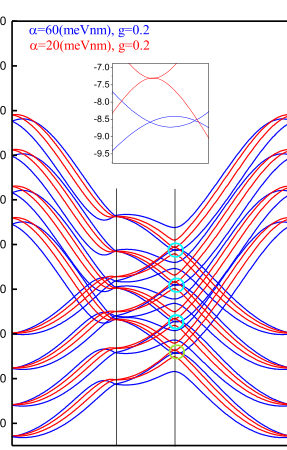
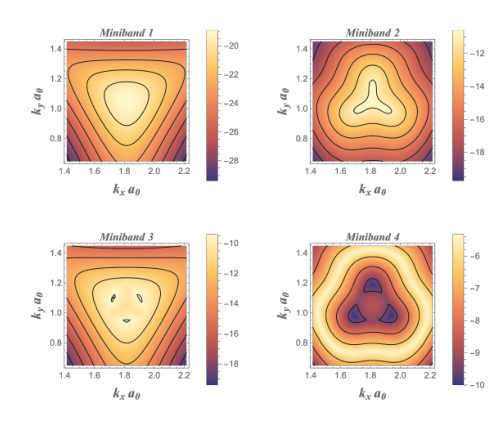
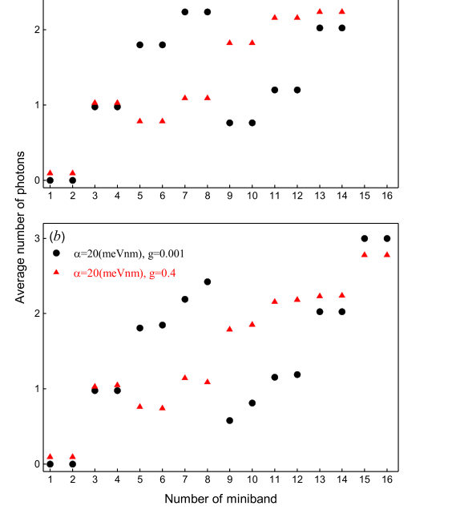
Summary. This theoretical work examines how coupling an artificial graphene structure to a cavity field, while simultaneously including Rashba spin-orbit interaction, modifies its electronic band structure. The key finding is that this interplay allows for the precise engineering of topological features, such as opening gaps at specific Dirac points, which manifests as strong, tunable oscillations in the spin-Hall conductivity.
Why it may be interesting. The explicit coupling between spin-orbit coupling (a key ingredient in topological physics) and cavity photons (a core concept in cavity QED) to engineer transport properties like $\sigma_{SH}$ is highly relevant for designing novel quantum devices.
Main problem. The study investigates the combined influence of a far-infrared (FIR) cavity field and Rashba spin-orbit interaction (SOI) on the electronic band structure and transport properties of artificial graphene.
Main result. The interplay between Rashba SOI and cavity coupling governs Dirac-point physics, allowing for the opening of gaps at type-II Dirac points and producing pronounced, oscillatory modifications in the spin-Hall conductivity.
Method. The authors employ a theoretical Hamiltonian approach, constructing a basis that is a tensor product of the electronic Hilbert space and the photon Fock space, followed by exact diagonalization and the use of the Kubo formalism.
Model / system. The system is artificial graphene (AG) made of InAs/GaAs quantum dots, modeled as a honeycomb lattice, coupled to a quantized cavity photon mode. The Hamiltonian includes terms for kinetic energy, periodic potential, Rashba SOI, and electron-photon interaction.
Key observables. Spin-Hall conductivity ($\sigma_{SH}$), band structure dispersion, mean photon number ($\langle \hat{N}_{ph} angle$), and the existence/nature of Dirac points (Type-I vs. Type-II).
Important parameters / regimes. Cavity geometry (cylindrical vs. linear), Rashba coupling strength, and cavity coupling strength ($g$).
Assumptions / limitations. The analysis uses the long-wavelength approximation for the vector potential and treats the electron-photon interaction perturbatively in some derivations.
Figures summary. Figures illustrate energy miniband dispersion for different cavity types and coupling constants, and show the evolution of $\sigma_{SH}$ as a function of chemical potential, highlighting oscillatory behavior.
Paper structure. The paper builds from defining the full Hamiltonian incorporating all interactions, deriving matrix elements for the coupling terms, solving the effective Hamiltonian via unitary transformations, and finally calculating the transport observable ($\sigma_{SH}$) using the Kubo formula.
We investigate the combined effect of a far-infrared cavity field and Rashba spin-orbit interac- tion on the band structure and transport properties of artificial graphene composed of quazi-2D InAs/GaAs quantum dots. The coupling to cavity photons is modeled by constructing a complete basis as the tensor product of the electronic Hilbert space and the Fock space. Our calculations for the system embedded in a linear cavity predict the existence of both type-I and type-II Dirac points which can be distinguished by their response to Rashba interaction. Namely, Rashba coupling opens a gap at type-II Dirac points, while type-I Dirac points remain gapless. For both cylindrical and linear cavities, we demonstrate the formation of electron-photon hybrid states and Rabi oscillations between energy minibands. Multiple splittings, crossings, and anticrossings between Dirac-band replicas produce pronounced modifications of the spin-Hall conductivity, including strong anisotropy and oscillatory behavior controlled by cavity geometry and polarization. Our results show that the interplay between Rashba and cavity couplings governs Dirac-point physics and provides a route toward tunable polaritonic transport and topological phases in engineered nanostructures.
Authors: Hideo Aoki
Type: both · Category: other · PDF: https://arxiv.org/pdf/2606.01744v1
Analysis basis: full PDF text, analyzed in chunks
Topic relevance: 🔥 non-equilibrium dynamics 4/5 · analog quantum simulation 3/5 · driven-dissipative phase transition 3/5 · non-equilibrium universality 3/5 · Keldysh / 2PI / non-Gaussian methods 2/5 · methods for driven-dissipative 2/5 · entanglement & information structure 1/5
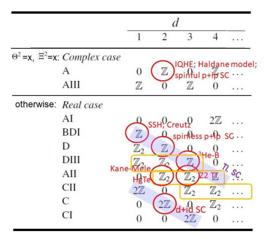
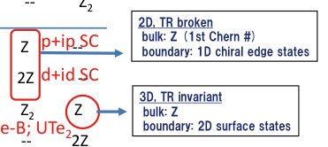
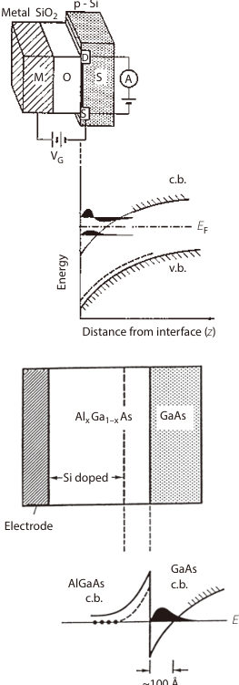
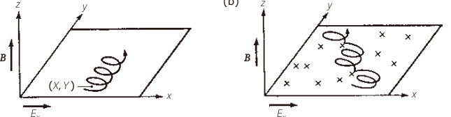
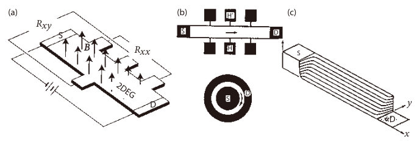
Summary. This comprehensive review details the Integer Quantum Hall Effect, establishing its foundation in topological physics. It then advances the concept by analyzing its realization in disordered systems and, most significantly, extends it to non-equilibrium Floquet topological insulators driven by light. This shows how topological quantization can emerge from time-dependent quantum dynamics.
Why it may be interesting. The extension to Floquet systems provides a direct link between quantum optics/AMO physics (laser driving) and fundamental condensed matter phenomena (topological quantization), making it highly relevant for open quantum systems research.
Main problem. The paper reviews the Integer Quantum Hall Effect (IQHE), explaining its underlying physics from theoretical and experimental standpoints, and placing it within the broader context of topological systems.
Main result. The IQHE is fundamentally linked to topological invariants, and the concept has been extended to non-equilibrium systems like Floquet topological insulators, realizing anomalous QHE without a static magnetic field.
Method. The analysis employs theoretical tools ranging from effective-mass approximations and Kubo formalism to advanced concepts like Floquet theory and Berry's curvature integration.
Model / system. The primary systems studied are two-dimensional electron gases (2DEGs) in strong magnetic fields, realized in semiconductor heterostructures, and graphene subjected to time-periodic driving fields (Floquet systems).
Key observables. Quantized Hall conductivity ($\sigma_{xy}$), Landau levels, topological invariants (Chern number), and quasi-energies.
Important parameters / regimes. Magnetic field strength ($B$), filling factor ($ u$), magnetic length ($\ell$), and laser frequency ($\Omega$).
Assumptions / limitations. The analysis relies on the clean limit, the lowest subband approximation, and approximations like the self-consistent Born approximation or high-frequency expansions for Floquet systems.
Figures summary. Figures illustrate the topological classification of quantum states, the energy spectra (Landau levels and Floquet subbands), and the characteristic plateaus in Hall and longitudinal conductivity ($\sigma_{xy}$ vs. gate voltage).
Paper structure. The paper progresses from the classical and quantum description of the IQHE in static fields, through the inclusion of disorder (localization theory), and culminates in the extension of QHE concepts to time-periodically driven (Floquet) systems.
Integer quantum Hall effect, which is the Hall effect quantized into integer times $e^2/h$ ($e$: elementary charge, $h$: Planck's constant) observed first in two-dimensional electron gases in strong magnetic fields, is reviewed from both theoretical and experimental standpoints. Basic physics underlying the phenomenon is explained. Specifically in this new edition we have a fresh look at how the quantum Hall effect is captured in a perspective of topological systems, since, while the quantum Hall effect is historically the first realization of the topological systems, the field has been delved into a much wider realm of physics of topological systems. We also mention diverse advances such as the quantum Hall effect (QHE) in various materials and contexts that include graphene, oxides and narrow-gap semiconductors, a relation with the fractional quantum Hall effect, and the quantum Hall effect as the resistance standard and further roles in the new SI system. We also expound the Floquet topological insulator (a light-matter coupled system) as a new paradigm in nonequilibrium topological systems, where an anomalous quantum Hall effect in zero magnetic field is realized as theoretically predicted to occur in graphene illuminated by a circularly-polarized laser and experimentally verified recently.
Authors: Sebastian Werner Schmid, Zoltán Balogh, Botond Sánta, Tímea Nóra Török, Zsombor Sinóros-Szabó, György Molnár, János Volk, László Pósa, András Halbritter
Type: both · Category: statistical mechanics · PDF: https://arxiv.org/pdf/2606.01872v1
Analysis basis: full PDF text, analyzed in chunks
Topic relevance: 🔥 driven-dissipative phase transition 4/5 · non-equilibrium dynamics 3/5 · non-equilibrium universality 3/5 · methods for driven-dissipative 2/5 · Frenkel-Kontorova 1/5 · Keldysh / 2PI / non-Gaussian methods 1/5
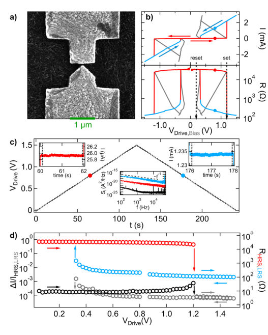
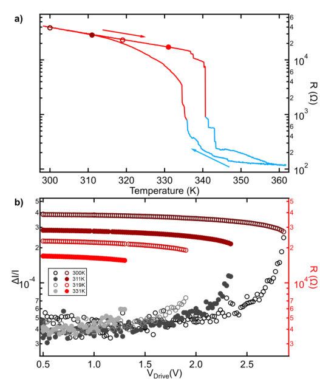
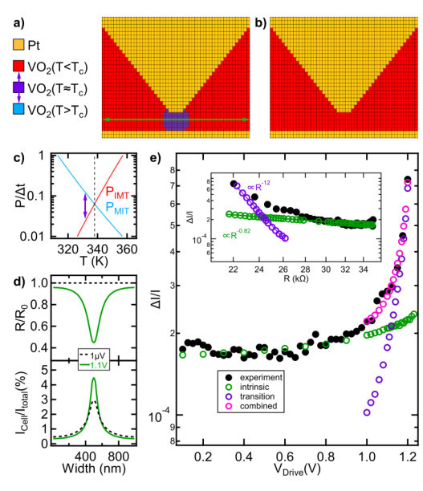
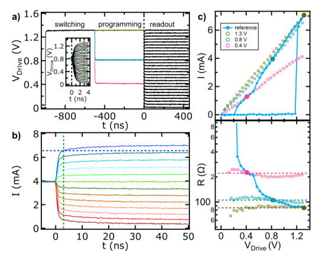
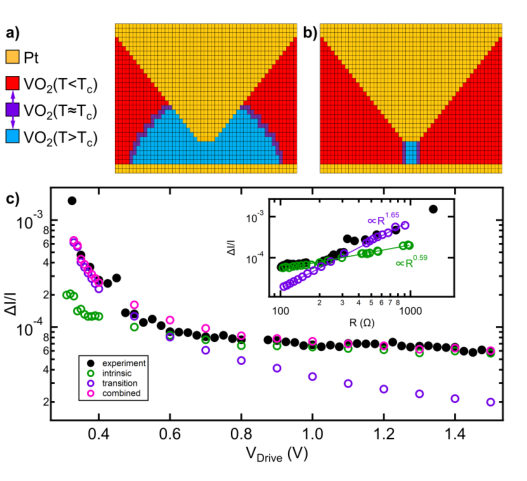
Summary. This paper analyzes the current noise in nanoscale VO2 devices undergoing a metal-to-insulator transition. By combining noise spectroscopy with 2D network simulations, the authors demonstrate that the large noise enhancement near switching thresholds originates from amplified phase fluctuations at the percolation threshold. This work provides fundamental insights into non-equilibrium dynamics governing phase transitions in nanoscale electronic materials.
Why it may be interesting. The work provides a detailed, mesoscopic model of a non-equilibrium phase transition, which shares conceptual links with critical phenomena studied in statistical mechanics, particularly concerning fluctuation-induced noise near critical points.
Main problem. The study investigates the origin of enhanced current noise during the electrically driven metal-to-insulator transition (MIT) in nanoscale VO2 devices.
Main result. The enhanced noise is attributed to amplified phase fluctuations near the percolation threshold, which sets a lower bound on the achievable variance of the switching threshold voltage.
Method. The research combines noise spectroscopy measurements with detailed two-dimensional resistor network simulations.
Model / system. The physical system is a nanoscale VO2 Mott memristor undergoing resistive switching. The model simulates the thermal and electrical dynamics using a 2D resistor network coupled with temperature-dependent resistance and phase transition probabilities.
Key observables. Relative current noise (dI/I), resistive switching (RS) cycle, threshold voltages (V_Set, V_Reset), and the scaling exponent of noise with resistance.
Important parameters / regimes. Transition temperature (Tc = 338 K), characteristic fluctuation time constants (tau), and energy barrier variations (epsilon_IMT, epsilon_MIT).
Assumptions / limitations. The analysis assumes that the noise can be decomposed into intrinsic fluctuations and phase transition noise, and that the system's behavior can be modeled by coupling thermal and electrical transport equations.
Figures summary. Figures illustrate I-V curves, noise spectra (showing 1/f behavior), and simulations comparing experimental noise measurements against models incorporating intrinsic and transition noise contributions.
Paper structure. The paper progresses from initial noise measurements across the switching cycle to detailed simulations that separate intrinsic noise from phase transition noise, culminating in a quantitative comparison between the predicted noise scaling and the observed threshold voltage variability.
We investigate the electrically driven metal-to-insulator transition (MIT) in nanoscale vanadium dioxide (VO$_2$) Mott memristor through noise spectroscopy and two-dimensional resistor network simulations. Our experiments focus on both the insulating phase as the applied voltage approaches the threshold voltage (set transition) and the metallic phase as the voltage is reduced toward the reset voltage (reset transition). In both regimes, we observe an order of magnitude increase in relative current noise near the transition points. To analyze the origin of this noise enhancement, we use simulations that capture the stochastic dynamics of the phase transition. The simulations indicate that the increased noise stems from amplified phase fluctuations near the percolation threshold, where competing metallic and insulating domains lead to dynamic reconfiguration of the conduction paths. In addition, we show that the precursor current fluctuations observed near the switching threshold are consistent with the threshold voltage variability measured in repeated switching cycles, indicating that the noise sets a lower bound on the achievable variance. These findings offer key insights into the non-equilibrium processes governing phase transitions in nanoscale VO$_2$ devices under electrical stimuli.
Authors: Seryio Saris, Roberto Rosati, Vladimir Bruevich, Thomas J. Sheehan, Maksim Roman, Vitaly Podzorov, Ermin Malic, William A. Tisdale
Type: both · Category: statistical mechanics · PDF: https://arxiv.org/pdf/2606.02460v1
Analysis basis: full PDF text, analyzed in chunks
Topic relevance: 🔥 non-equilibrium dynamics 4/5 · correlated / nonlocal dissipation 1/5 · driven-dissipative phase transition 1/5 · methods for driven-dissipative 1/5 · non-equilibrium universality 1/5
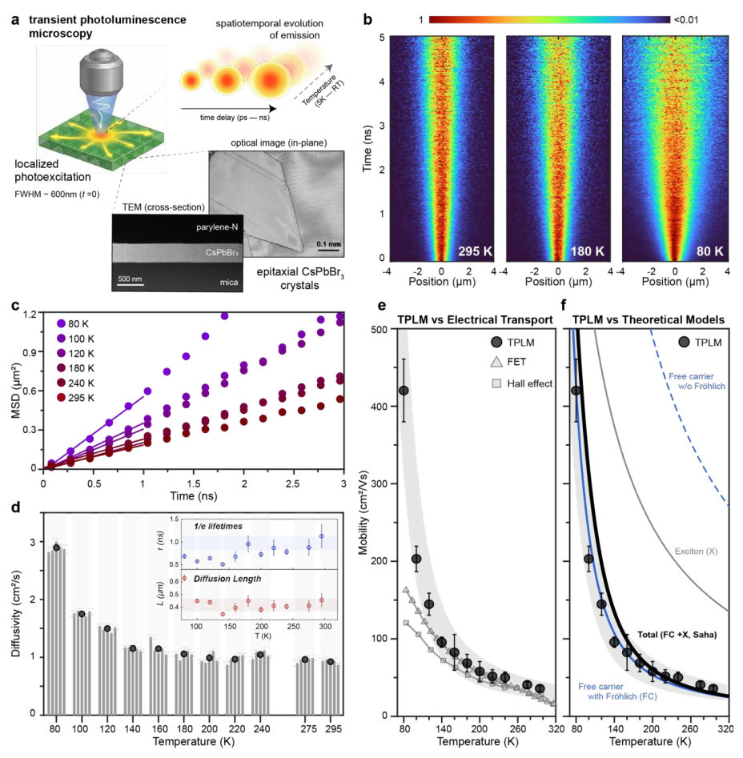
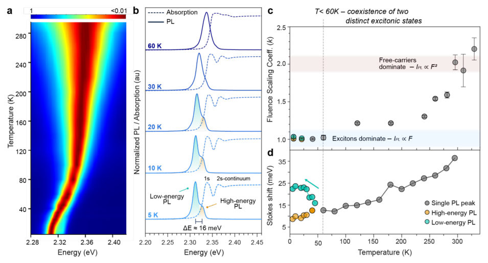
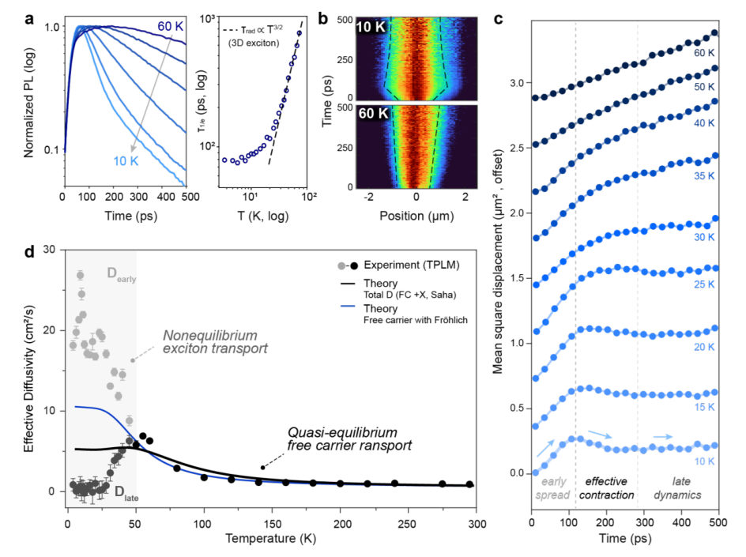
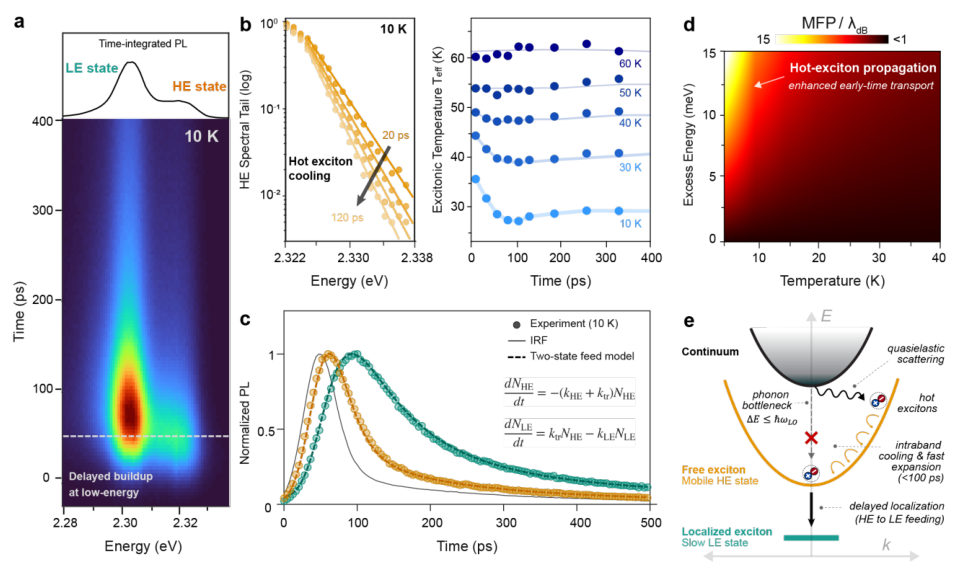
Summary. This work demonstrates that carrier transport in $ ext{CsPbBr}_3$ perovskites deviates significantly from equilibrium theory at low temperatures. By resolving two coupled populations—a fast hot-exciton gas and a slower localized state—the authors show that energy flow involves coupled kinetics, proving that transport and thermalization are intrinsically linked processes.
Why it may be interesting. The explicit breakdown of the separation between transport and thermalization provides a rich platform for studying non-equilibrium energy relaxation, which is highly relevant to open quantum systems and energy harvesting in solid-state quantum emitters.
Main problem. The paper investigates the breakdown of the quasi-equilibrium picture for carrier transport in $ ext{CsPbBr}_3$ perovskites at low temperatures due to significant excitonic effects.
Main result. Transport is governed by coupled, non-equilibrium kinetics between a fast, hot-exciton gas and a slower, quasi-localized state, showing that transport and thermalization are not separable processes.
Method. The study combines transient photoluminescence microscopy (TPLM) measurements with detailed kinetic modeling (two-state feeding model) to track carrier populations and spatial dynamics.
Model / system. The system is epitaxial $ ext{CsPbBr}_3$ single crystals. The model treats carrier dynamics using a two-state kinetic framework (Hot Exciton $\leftrightarrow$ Low-Energy Exciton) coupled with diffusion equations to describe energy flow.
Key observables. Diffusivity ($D$), Mean-Squared Displacement ($ ext{MSD}$), effective excitonic temperature ($ ext{T}_{ ext{eff}}$), and population transfer rates ($\lambda_1, \lambda_2$).
Important parameters / regimes. Low temperature regime ($< 60$ K), characteristic timescales ($\sim 10-100 ext{ ps}$), and the energy difference between exciton states ($\Delta E \approx 16 ext{ meV}$).
Assumptions / limitations. The analysis assumes that the transport dynamics can be decomposed into distinct, coupled kinetic populations (hot vs. localized) rather than a single thermalized ensemble.
Figures summary. Figures illustrate the convergence of transport measurements at high T, the divergence below 140 K, and the characteristic two-population signature in MSD curves and PL transients at low T.
Paper structure. The paper progresses by first validating the equilibrium model at high T, then demonstrating its failure at low T by resolving two coupled populations (hot/low-energy excitons), and finally quantifying the non-equilibrium nature of the energy flow.
Transport of optically excited carriers in semiconductors is typically described within a quasi-equilibrium picture, where energy is carried by a single thermalized quasiparticle population characterized by well-defined transport coefficients. Here, we demonstrate that in epitaxial CsPbBr3 perovskite single crystals, this picture holds near room temperature - but breaks down dramatically at low temperature. Using transient microscopy, we show that optically measured carrier mobilities match device-scale Hall-effect and field-effect transistor measurements across a broad temperature range, resolving reported discrepancies and validating the equilibrium framework in the free-carrier regime. Below ~60 K, however, when excitonic effects become significant, equilibrium models begin to fail. We observe two coupled populations: a transient (<100 ps) hot-exciton gas with a diffusivity ~25-30 cm2/s - greatly exceeding the diffusivity expected for thermalized excitons - and a quasi-localized state that is fed by the cooling of the hot-exciton gas. These results reveal that in CsPbBr3, transport and thermalization are not separable processes: carriers move while still redistributing among internal degrees of freedom, breaking the timescale separation that underpins equilibrium transport theory in conventional semiconductors. By resolving transport at the population level, we can directly access the competing kinetics of exciton formation, interconversion, and cooling, offering a new space for controlling energy flow in perovskite materials and their photonic applications.
Authors: S Rastogi, S Samanta, V Jangir, L Patra, K Modi, A Jain, G Scappucci, U Mukhopadhyay, S Mahapatra
Type: experiment · Category: quantum information and computing · PDF: https://arxiv.org/pdf/2606.00711v1
Analysis basis: full PDF text, analyzed in chunks
Topic relevance: 🔥 QC/QI experiment 4/5
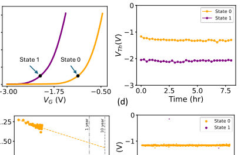
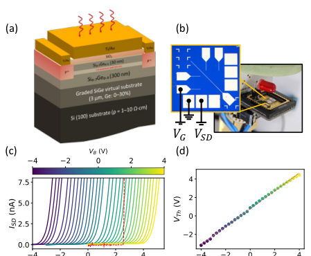
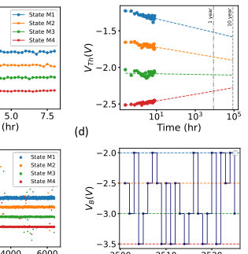
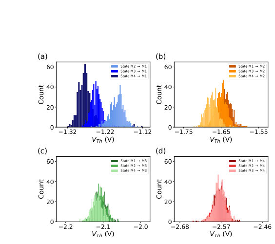
Summary. This paper reports on the development of an optically programmable and erasable cryogenic flash memory using an undoped Si/SiGe HFET. By leveraging interface traps, the device achieves stable, non-volatile storage of multiple bits at 1.5 K. The results confirm its viability for integration into large-scale, solid-state quantum computing architectures.
Why it may be interesting. This work directly addresses hardware requirements for quantum computation by proposing a solid-state, non-volatile memory element compatible with silicon-based quantum platforms, which is highly relevant to quantum information engineering.
Main problem. The paper addresses the critical need for scalable, non-volatile memory elements within cryogenic quantum computing architectures to overcome information shuttling bottlenecks.
Main result. They successfully demonstrated both binary and multi-bit memory operation in an HFET, showing stable state retention for years and endurance exceeding $10^3$ cycles at 1.5 K.
Method. The memory functionality is realized by exploiting the interplay between optical excitation (using an LED) and gate bias in an undoped Si/SiGe HFET to deterministically tune and 'lock' the threshold voltage.
Model / system. The physical platform is an undoped Si/SiGe heterojunction field-effect transistor (HFET) fabricated on a Si (100) substrate. The memory state is stored by trapping charges at the semiconductor-oxide interface, which shifts the threshold voltage ($V_{Th}$).
Key observables. Threshold voltage ($V_{Th}$), state retention time, cycling endurance, and the distribution of $V_{Th}$ across multiple programmed states.
Important parameters / regimes. Operation temperature of 1.5 K; high interface trap density ($D_{it} > 1.6 imes 10^{12} ext{ eV}^{-1} ext{cm}^{-2}$); endurance $> 10^3$ cycles; retention $> 10^4$ s.
Assumptions / limitations. The initial $V_{Th}$ without illumination is unstable, requiring a reset step; state stability relies on charge trapping/detrapping processes at the interface.
Figures summary. Figures illustrate the schematic setup, transfer characteristics showing $V_{Th}$ tuning via LED illumination, and quantitative data on state retention over time and endurance over repeated switching cycles for both binary and multi-bit operation.
Paper structure. The paper details the physical mechanism, demonstrates the deterministic tuning of $V_{Th}$ using optical excitation, and then rigorously characterizes the device's reliability by measuring state retention and cycling endurance for both two-state and multi-bit operation.
Scalable cryogenic memory is a critical yet unresolved requirement for large-scale quantum computing architectures, particularly for computing-in-memory schemes. We exploit the interplay between optical excitation and gate bias in an undoped Si/SiGe heterojunction field-effect transistor (HFET) to realize non-volatile memory functionality. The device exploits a high interface trap density ($D_{it} > 1.6 \times 10^{12}$~eV$^{-1}$cm$^{-2}$), which, in conjunction with the oxide thickness and dielectric constant, enables effective "locking" of the threshold voltage to the applied gate bias over a wide voltage range. Two of these states can be selected for binary operation, while the availability of multiple stable states within the same device enables multibit data storage. Robust cycling endurance ($>~10^3$ cycles) and long-term state retention ($>~10^4$~s) of the memory states at 1.5 K confirm the suitability of this approach for integration into Si/SiGe-based quantum computing architectures.
Authors: Shiyu Chen, Yan He
Type: theory · Category: statistical mechanics · PDF: https://arxiv.org/pdf/2606.00479v1
Analysis basis: full PDF text, analyzed in chunks
Topic relevance: driven-dissipative phase transition 3/5 · Keldysh / 2PI / non-Gaussian methods 2/5 · entanglement & information structure 2/5 · methods for driven-dissipative 2/5 · non-equilibrium dynamics 2/5 · non-equilibrium universality 2/5 · analog quantum simulation 1/5 · correlated / nonlocal dissipation 1/5
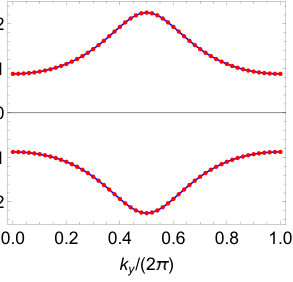
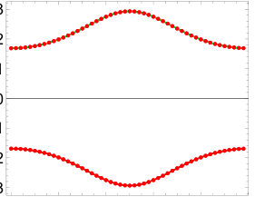
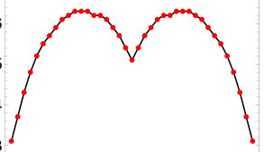
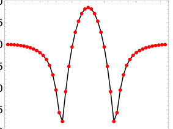
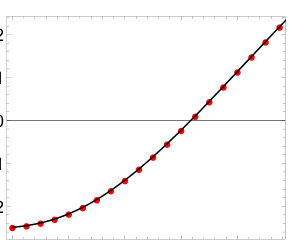
Summary. This work develops the Uhlmann phase as a robust topological invariant for Higher-Order Topological Insulators (HOTIs) at finite temperatures. By analyzing the BBH model, the authors show that the topological phase is characterized by the quantization of this phase, and the transition to a trivial phase is precisely located by observing where these quantized jumps vanish at a critical temperature $T_c$.
Why it may be interesting. The extension of topological invariants from ground-state properties (like Berry curvature) to finite-temperature mixed states using quantum information concepts (Uhlmann phase) provides a powerful, generalizable tool for studying thermal phase transitions in quantum materials.
Main problem. The study focuses on characterizing the topological phase of Higher-Order Topological Insulators (HOTIs) when the system is subjected to finite temperatures.
Main result. The Uhlmann phase serves as a finite-temperature topological index, where the topological transition is marked by the disappearance of abrupt jumps in this phase at a critical temperature ($T_c$).
Method. The analysis generalizes the topological concept from zero temperature (using the Berry connection) to finite temperature by employing the Uhlmann connection and calculating the Uhlmann phase from the density matrix.
Model / system. The primary model is the Benalcazar-Bernevig-Hughes (BBH) model, a 2D tight-binding Hamiltonian. The analysis involves calculating the density matrix $ ho$ using Boltzmann weights at finite temperature $T$.
Key observables. The Uhlmann phase ($\Phi_U$), which is quantized to 0 or $\pi$ in the topological phase, and the critical temperature ($T_c$).
Important parameters / regimes. Temperature ($T$), the parameter $m$ in the Hamiltonian, and the lattice momenta ($k_x, k_y$).
Assumptions / limitations. The analysis assumes that the Uhlmann phase correctly captures the topological invariant at finite temperatures, and approximations are made regarding the dominant components of the density matrix at low temperatures.
Figures summary. Figures illustrate the Wannier centers of the BBH model and plot the Uhlmann phase ($\Phi_U$) or the Uhlmann overlap ($ ext{Tr}( ho_0 \mathcal{W}_U)$) as a function of temperature or momentum, demonstrating quantization or continuous variation.
Paper structure. The paper first establishes the BBH model and its zero-temperature topology using nested Wilson loops. It then introduces the Uhlmann connection and phase to generalize this concept to finite temperature, deriving the critical temperature $T_c$ from the behavior of the Uhlmann phase.
We have studied the finite-temperature topology of higher-order topological insulators (HOTIs) based on the Uhlmann phase, which is a phase angle of the Uhlmann overlap. As an example of HOTIs, the Hamiltonian of the Benalcazar-Bernevig-Hughes (BBH) model is constructed from Gamma matrices satisfying the Clifford algebra. This specific algebraic structure underpins the model's higher-order topological properties, including the quantization of the Uhlmann phase to $0$ or $π$. This quantization enables us to treat the abrupt jumps of the Uhlmann phase as an indication of the nontrivial topological phase of the BBH model at finite temperature. From the disappearance of these jumps, we determine the critical temperature at which the topological transition occurs. For a special choice of parameters, the Uhlmann overlap and the critical temperature can be computed analytically.
Authors: Sourav Paul, Prasenjit Ghosh, Krishna Prasad Maity, Vineet Pandey, Abhijith M. B., Premananda Chatterjee, Kenji Watanabe, Takashi Taniguchi, Nicholas R. Glavin, Ajit K. Roy, Atindra Nath Pal, Vidya Kochat
Type: experiment · Category: disordered systems and neural networks · PDF: https://arxiv.org/pdf/2606.00665v1
Analysis basis: full PDF text, analyzed in chunks
Topic relevance: driven-dissipative phase transition 3/5 · non-equilibrium dynamics 3/5 · non-equilibrium universality 3/5 · analog quantum simulation 1/5 · correlated / nonlocal dissipation 1/5 · methods for driven-dissipative 1/5 · spintronics-quantum-optics interface 1/5
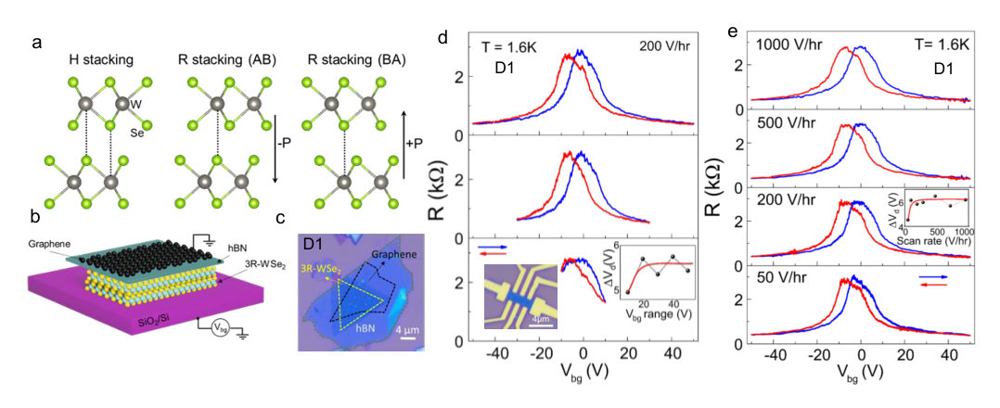
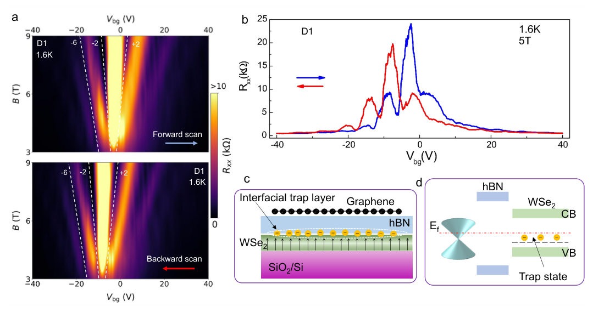
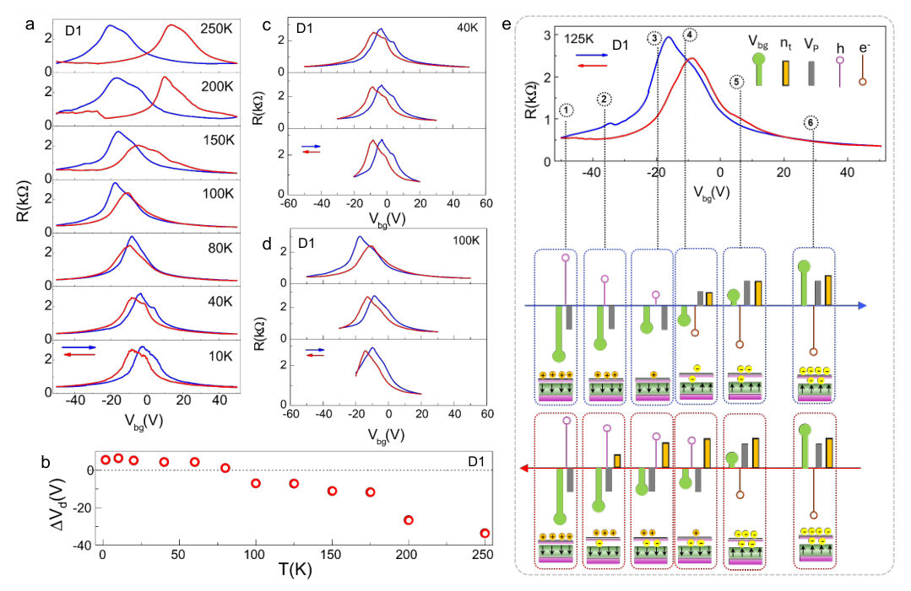
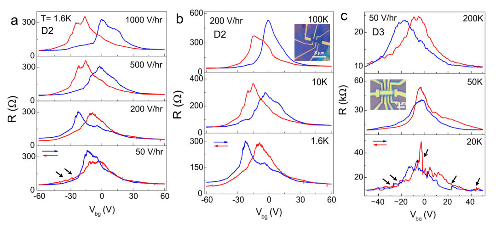
Summary. This work uses a graphene-FET setup to study ferroelectricity in 2D WSe2, revealing that while polarization switching is present, the measured electrical response is heavily influenced by structural disorder and charge trapping. The study distinguishes between intrinsic FE switching and disorder-dominated effects, which manifest as a temperature-dependent transition between hysteresis and anti-hysteresis.
Why it may be interesting. The interplay between intrinsic polarization switching (a non-equilibrium, ordered state) and disorder-induced charge trapping/relaxation dynamics provides a rich platform for studying complex, non-equilibrium many-body physics relevant to open quantum systems.
Main problem. The study investigates the ferroelectric (FE) switching characteristics of CVD-grown 3R-stacked WSe2 bilayers, focusing on how intrinsic structural disorder and multi-domain kinetics affect polarization switching.
Main result. The research demonstrates that while FE switching is observable via hysteresis in FET measurements, the response is significantly complicated by disorder, leading to transitions between conventional hysteresis and anti-hysteresis depending on temperature and sweep rate.
Method. The authors used a graphene-based ferroelectric field-effect transistor (graphene-FE-FET) architecture to probe the polarization switching of WSe2 bilayers at cryogenic temperatures.
Model / system. The physical system is the 3R-stacked WSe2 bilayer grown by CVD, which exhibits sliding ferroelectricity. The device structure is a Graphene/hBN/3R-WSe2 heterostructure, where graphene acts as a highly sensitive charge probe.
Key observables. Hysteresis in the R-V_bg curve, shift in the Charge Neutrality Point (CNP) resistance peak, and the transition between hysteresis and anti-hysteresis behavior.
Important parameters / regimes. Low temperatures (e.g., 1.6 K), gate voltage sweep rate, and temperature dependence (showing transitions around 80 K and 200 K).
Assumptions / limitations. The analysis assumes that the observed hysteresis is due to FE switching, but later notes that trap-assisted effects (Interfacial Charge Layer formation) can obscure or dominate this intrinsic switching.
Figures summary. Figures illustrate the atomic stacking, device fabrication, R-V_bg hysteresis loops at low T, and temperature-dependent sweeps showing the transition from hysteresis to anti-hysteresis due to trap dynamics.
Paper structure. The paper progresses from establishing the basic FE switching signature (hysteresis) at low T, to analyzing the temperature dependence revealing the competition between FE switching and charge trapping, and finally detailing the role of domain kinetics in causing apparent anti-hysteresis.
Sliding ferroelectricity in van der Waals (vdW) layered systems has emerged as a promising route toward non-volatile nanoscale devices, where interlayer displacement in non-centrosymmetric bilayers generates an out-of-plane polarization. In particular, 3R-stacked bilayer transition metal dichalcogenides (TMDs) grown via chemical vapor deposition (CVD) have been shown to host such polarization due to broken inversion symmetry. However, a detailed investigation of the 2D ferroelectric (FE) properties of CVD-grown 2D films, particularly the role of intrinsic disorder, such as structural defects and domain structure, remains poorly understood. Here, we investigate the FE switching characteristics of CVD-grown 3R-stacked WSe2 using a graphene-based ferroelectric field-effect transistor (graphene-FE-FET) architecture, where graphene serves as a highly sensitive probe of induced charge modulation due to polarization switching of FEs. We show that the growth-induced structural disorder significantly impacts polarization switching, while multi-domain kinetics governs the evolution of the FE response. These findings provide important insights into the design and optimization of FE devices based on vdW materials.
Authors: Akira Lentfert, Ephraim Spindler, Björn Heinz, Mathias Weiler, Philipp Pirro
Type: both · Category: other · PDF: https://arxiv.org/pdf/2606.02139v1
Analysis basis: full PDF text, analyzed in chunks
Topic relevance: driven-dissipative phase transition 3/5 · spintronics-quantum-optics interface 3/5 · non-equilibrium dynamics 2/5 · non-equilibrium universality 2/5 · analog quantum simulation 1/5 · exotic spin models in light-matter 1/5 · methods for driven-dissipative 1/5
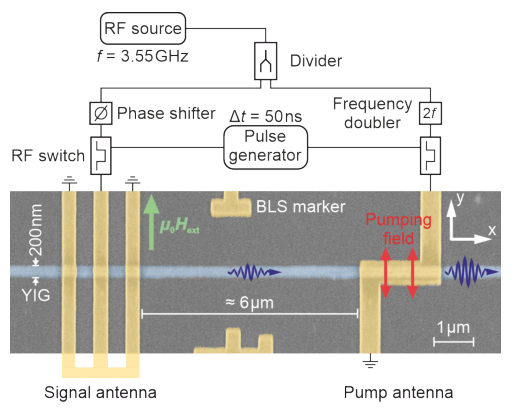
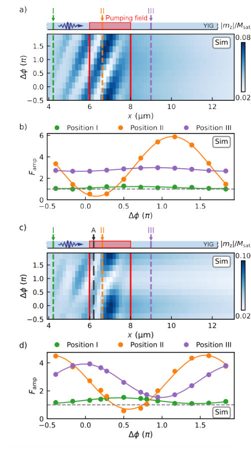
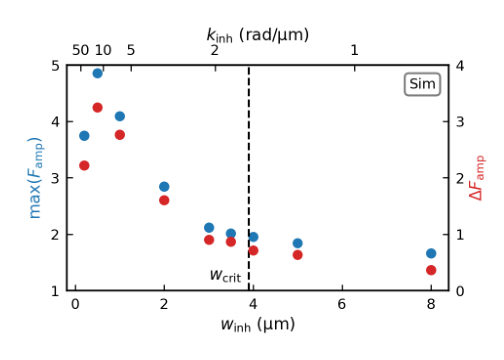
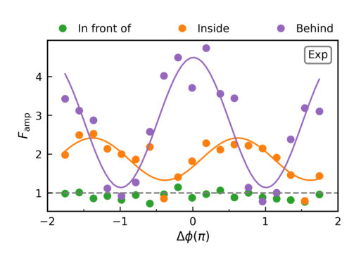
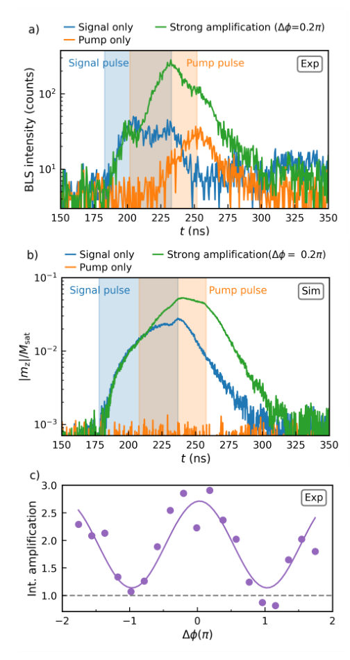
Summary. This work demonstrates that local inhomogeneities in YIG nanostructures can induce phase-dependent, non-adiabatic parametric amplification of spin waves. By providing extra linear momentum, these defects enable efficient amplification in larger structures, a key finding validated by both micromagnetic simulations and Brillouin light scattering experiments. This mechanism offers a promising pathway for developing large-scale, phase-sensitive magnonic circuits for future computing applications.
Why it may be interesting. The investigation into engineered material defects (inhomogeneities) to control wave dynamics and enhance nonlinear processes is relevant to understanding how boundary conditions or disorder can be harnessed in quantum/wave systems, analogous to engineered potentials in AMO physics.
Main problem. The paper addresses the need for phase-conserving and phase-sensitive amplification mechanisms for spin waves in magnonics for advanced computing applications.
Main result. Local inhomogeneities in YIG nanostructures enable non-adiabatic parametric amplification of spin waves, allowing this effect to occur even in structures larger than the spin-wave wavelength.
Method. The study combines micromagnetic simulations with experimental validation using micro-focused Brillouin light scattering (BLS) spectroscopy.
Model / system. The physical system is Yttrium Iron Garnet (YIG) waveguides. The model investigates spin-wave dynamics under parametric pumping, contrasting ideal (adiabatic) amplification with enhanced, non-adiabatic amplification induced by engineered local inhomogeneities.
Key observables. Phase-dependent amplification factor, $F_{amp}(\Delta\varphi)$, and time-resolved intensity measurements of the spin-wave pulse.
Important parameters / regimes. The critical role of the additional linear momentum ($k_{inh}$) provided by inhomogeneities, which enables the non-adiabatic regime in larger structures.
Assumptions / limitations. The study assumes that the introduction of local inhomogeneities is the key mechanism to overcome size limitations inherent in achieving non-adiabatic parametric amplification.
Figures summary. Figures illustrate the setup, compare simulation results for ideal vs. inhomogeneous waveguides showing phase dependence, and present time-resolved BLS measurements confirming the phase-dependent amplification factor.
Paper structure. The paper establishes the need for phase-sensitive amplification, presents the theoretical framework involving parametric pumping and the role of inhomogeneities, details the simulation and experimental results demonstrating the non-adiabatic regime, and concludes with implications for large-scale magnonic circuits.
As magnonics evolves towards non-conventional computing, the development of phase-conserving and phase-sensitive amplification mechanisms becomes increasingly important. A particularly promising approach is non-adiabatic parametric amplification. In this work, the influence of local inhomogeneities on the parallel parametric amplification of spin waves in nano-scale Yttrium Iron Garnet waveguides is investigated. Micromagnetic simulations reveal that in larger pump regions, where only adiabatic amplification is expected, scattering centers provide additional linear momentum that enables non-adiabatic amplification of propagating spin waves. Importantly, the coherence of the process remains unaffected by the scattering and the generation of co-propagating spin waves enhance the effective amplification. Our simulations are confirmed by micro-focused Brillouin light scattering spectroscopy experiments, reproducing both the phase-dependent behavior and the characteristic features of the time-resolved dynamics. These findings demonstrate the flexibility of the parametric amplification process and provide a key mechanism for the development of large-scale spin-wave computing circuits.
Authors: Guanghui Cheng, Shiva T. Konakanchi, Andres E. Llacsahuanga Allcca, Sanjeev Khare, Nithin Abraham, Yuqing Cao, Hechang Lei, Kenji Watanabe, Takashi Taniguchi, Pramey Upadhyaya, Yong P. Chen
Type: both · Category: other · PDF: https://arxiv.org/pdf/2606.00604v1
Analysis basis: full PDF text, analyzed in chunks
Topic relevance: analog quantum simulation 3/5 · exotic spin models in light-matter 3/5 · spintronics-quantum-optics interface 3/5 · driven-dissipative phase transition 2/5 · non-equilibrium dynamics 1/5



Summary. This work reports on the discovery and characterization of moiré magnetism in twisted $ ext{CrCl}_3$ XY magnets. By measuring tunneling magnetoconductance, the authors observe field-induced transitions indicative of coexisting antiferromagnetic and ferromagnetic domains. Crucially, they demonstrate that the noncollinear ground state, featuring $90^\circ$ domain walls, can be electrically tuned using bias voltage, advancing the field of twist-spintronics.
Why it may be interesting. The ability to electrically tune magnetic phases via voltage control in a moiré magnet system provides a direct platform for studying spin-charge coupling and novel spintronic functionalities, which is relevant to open quantum systems dynamics.
Main problem. The study aims to explore noncollinear magnetic phases in twisted magnets, overcoming the limitations imposed by previous studies restricted to uniaxial magnetic systems.
Main result. The authors experimentally demonstrate moiré magnetism in twisted $ ext{CrCl}_3$, identifying a robust ground state characterized by $90^\circ$ domain walls and showing voltage control over these noncollinear spin textures.
Method. The research combines experimental measurements of tunneling magnetoconductance ($G(H)$) in magnetic tunnel junctions with micromagnetic simulations to model the spin configurations.
Model / system. The physical system is twisted $ ext{CrCl}_3$, an easy-plane XY magnet, studied in natural few-layer, twisted double bilayer (tDB), and twisted double trilayer (tDT) configurations. The magnetic behavior is governed by interlayer coupling modulated by the twist angle.
Key observables. Tunneling magnetoconductance $G(H)$ and its derivative $|dG/dH|$, which exhibit field-driven kinks corresponding to magnetic phase transitions.
Important parameters / regimes. Twist angle (e.g., $0.5^\circ$, $1^\circ$), external magnetic field ($H$), bias voltage ($V_{ ext{bias}}$), and temperature ($T$).
Assumptions / limitations. The analysis assumes that the tunneling probability is determined by the interlayer spin alignment, and the micromagnetic model captures the essential physics of the interlayer exchange coupling.
Figures summary. Figures illustrate the XY spin model and Moiré superlattice structure; $G(H)$ vs. $H$ curves show field-induced kinks for tDB and tDT; phase diagrams map out the dependence of magnetic phases on temperature and field, and bias control is shown via $G(H)$ vs. $V_{ ext{bias}}$.
Paper structure. The paper progresses by first establishing the experimental platform using $ ext{CrCl}_3$ in twisted bilayers (tDB), demonstrating the two-kink feature. It then extends the analysis to twisted double trilayers (tDT), revealing the noncollinear ground state and mapping out control mechanisms via temperature and bias voltage.
Twisted moiré magnets are promising in exploring noncollinear magnetic phases, yet current experimental studies have been restricted to uniaxial magnets, limiting the accessible phase space. Here, we demonstrate noncollinear moiré magnetism based on XY magnet CrCl3. The tunneling magnetoconductance of twisted CrCl3 exhibits multiple field-driven transitions in small-twist-angle devices, attributed to the coexisting antiferromagnetic and ferromagnetic domains with distinct susceptibilities. The inferred spin configuration depends on the layer number, reflecting the interlayer coupling strength between twisted layers. This moiré magnetism is remarkably robust, persisting up to twisted double nine-layer stacks. Combined with micromagnetic simulations, we identify the ground state as the predicted "twisted-s" phase featuring 90° domain walls. Finally, we demonstrate voltage control of these noncollinear phases, highlighting the electrically tunable twist-spintronics.
Authors: A. W. C. Lau, J. B. Sokoloff
Type: both · Category: other · PDF: https://arxiv.org/pdf/2606.00314v1
Analysis basis: full PDF text, analyzed in chunks
Topic relevance: non-equilibrium dynamics 3/5 · Keldysh / 2PI / non-Gaussian methods 2/5 · methods for driven-dissipative 2/5 · Frenkel-Kontorova 1/5 · driven-dissipative phase transition 1/5 · non-equilibrium universality 1/5
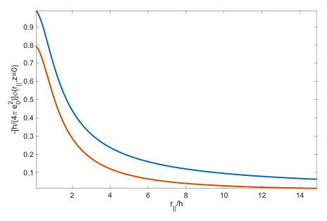
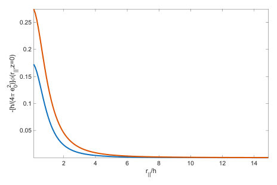
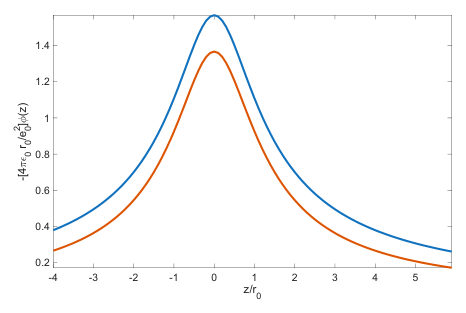
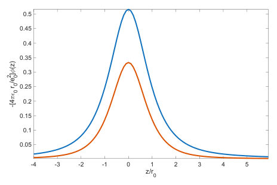
Summary. This work theoretically models the friction acting on ions and water in carbon nanotubes, using electronic screening from conduction electrons within the Thomas-Fermi framework. The authors compare calculated electronic friction to other sources, concluding that while screening is important, phonon interactions likely dominate the observed ion transport behavior. The study is crucial for understanding nanoscale electrochemistry and ion conduction in confined geometries.
Why it may be interesting. The detailed analysis of charge dynamics, screening, and transport mechanisms in nanoscale conductors provides insights into open quantum systems where boundary conditions and environmental coupling (like the electron gas) dictate macroscopic transport properties.
Main problem. The paper investigates the friction experienced by ions and water molecules moving through narrow carbon nanotubes (CNTs), focusing on how electronic screening from conduction electrons modifies this friction.
Main result. Electronic and image-dragging friction contributions are found to be small compared to phonon friction, suggesting that ion transport is governed by other mechanisms like the Grotthuss mechanism or osmotic pressure.
Method. The authors employ theoretical modeling using the Thomas-Fermi approximation to calculate the induced charge density and resulting friction forces, supplemented by analyzing charge establishment time scales.
Model / system. The system involves ions and water molecules confined within metallic and semiconducting CNTs. The theory models the electrostatic potential ($\phi$) using Poisson's equation, incorporating screening effects via the Thomas-Fermi length ($\lambda_{ ext{TF}}$).
Key observables. Flow rate/mobility of ions and water, induced charge density ($ ho_{ ext{ind}}$), and various friction forces ($F_{ ext{fric}}$).
Important parameters / regimes. Screening length ($\lambda_{ ext{TF}}$), CNT length ($L$), and the ratio of measurement time to charge establishment time ($t$).
Assumptions / limitations. The Thomas-Fermi approximation is used for screening, and the analysis often assumes the CNT is an equipotential region during measurement for certain regimes.
Figures summary. Figures reference experimental setups for measuring ion conduction and pH changes, and theoretical results illustrate potential profiles ($\phi(x)$) and force calculations.
Paper structure. The paper progresses from analyzing experimental observations (differences in flow rates between metallic and semiconducting CNTs) to developing a theoretical framework using the Thomas-Fermi model to calculate electronic screening effects on friction, and finally comparing these calculated forces to other known friction sources.
Li, et. al., have observed a larger flow rate, resulting from osmotic pressure, of protons and water molecules in nanometer scale diameter metallic carbon nanotubes compared to that in semiconducting carbon nanotubes. The flow rate of potassium ions, however, under an applied electric field is almost the same in metallic and semiconducting nanotubes. We propose a simple physical picture to understand these experimental results by examining the effects of screening by conduction electrons in electrically conducting carbon nanotubes on the friction experienced by protons, water molecules, and ions flowing through the nanotube.
Authors: Ondřej Wojewoda, Sina Mayr, Miela J. Gross, Jan Klíma, Jaganandha Panda, Jakub Krčma, Jakub Holobrádek, Kristýna Davídková, Andrii V. Chumak, Igor Gerasimchuk, Roman Verba, Philipp Pirro, Markus Weigand, Simone Finizio, Morris Lindner, Carsten Dubs, Qi Wang, Sebastian Wintz, Caroline A. Ross, Michal Urbánek
Type: experiment · Category: other · PDF: https://arxiv.org/pdf/2606.00849v1
Analysis basis: full PDF text, analyzed in chunks
Topic relevance: spintronics-quantum-optics interface 3/5 · exotic spin models in light-matter 2/5 · non-equilibrium dynamics 2/5 · driven-dissipative phase transition 1/5 · non-equilibrium universality 1/5
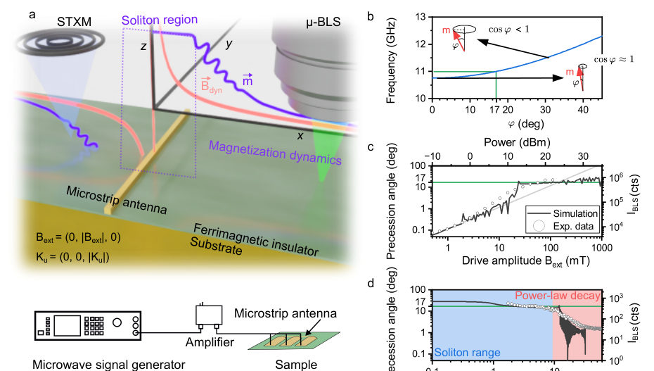
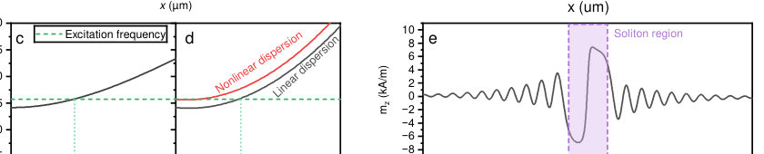
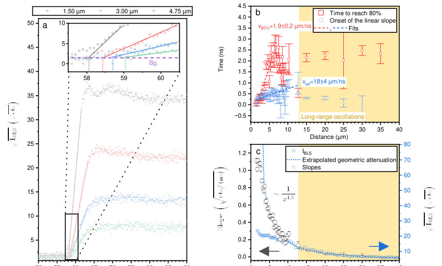
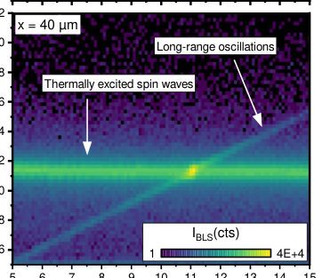
Summary. This work demonstrates the ultrafast creation of large dynamic magnetic solitons in garnet films using microwave excitation. By combining advanced microscopy techniques, the authors characterize the soliton's unique formation mechanism and its subsequent collapse into propagating spin waves. This establishes a controllable, nonlinear method for manipulating magnetic states in thin films.
Why it may be interesting. The study of nonlinear wave phenomena, such as solitons, in magnetic systems provides a physical realization of nonlinear wave dynamics, which has parallels in nonlinear optics and other areas of AMO physics.
Main problem. The paper reports on the ultrafast formation and dynamics of large dynamic magnetic solitons in thin ferrimagnetic garnet films.
Main result. They established that microwave-driven solitons are a robust nonlinear phenomenon, characterized by formation inside the linear spin-wave band and subsequent emission of short-wavelength spin waves upon collapse.
Method. The research combines time-resolved Brillouin light scattering microscopy ($\mu$-BLS) and scanning transmission X-ray microscopy (STXM) to track magnetization dynamics driven by a microstrip antenna.
Model / system. The system involves thin ferrimagnetic garnet films (Bi:YIG and Ga:YIG) exhibiting perpendicular magnetic anisotropy. The dynamics are governed by nonlinear magnetization equations, which are analyzed against linear spin-wave theory.
Key observables. Precession angle ($\varphi$), nonlinear frequency shift, spatial decay of magnetization, and emitted short-wavelength spin waves.
Important parameters / regimes. The soliton exhibits an exceptionally large spatial extent (tens of microns) and forms much faster than linear spin-wave propagation.
Assumptions / limitations. The analysis assumes the soliton is a dissipative excitation requiring continuous pumping, and that the transition from nonlinear to linear dynamics is rapid.
Figures summary. Figures illustrate the experimental geometry, the nonlinear shift of FMR vs. precession angle, spatial decay of the precession angle, and time-resolved measurements showing oscillations and onset delays.
Paper structure. The paper systematically presents experimental characterization of the system, detailing the observation of the soliton, explaining its formation via a self-limiting mechanism, and finally demonstrating its collapse and subsequent spin-wave emission.
Nonlinear magnetization dynamics offers a rich variety of phenomena ranging from bistability to chaos. Here, we report the ultrafast formation of a dynamic magnetic soliton in thin ferrimagnetic garnet films with perpendicular magnetic anisotropy, driven by the microwave magnetic field of a microstrip antenna. Using time-resolved Brillouin light scattering microscopy and scanning transmission X-ray microscopy, we directly track the build-up of the large-angle precession state. The observed soliton is distinct from other nonlinear magnetic excitations in two key aspects: (i) it forms inside the linear spin-wave frequency band, and (ii) it is exceptionally large, reaching tens of microns beyond the antenna. We explain the soliton formation by the self-limiting mechanism upon a positive nonlinear frequency shift and the spatial extent of the near-field of the antenna. At large distances from the drive, the soliton collapses and emits short-wavelength spin waves via almost instantaneous spatial wavenumber conversion. Time-resolved measurements further reveal a small finite delay during soliton formation, while coherent long-range oscillations appear essentially simultaneously over distances up to 40 micrometers. These results establish microwave-driven solitons as a robust nonlinear phenomenon in thin-film garnets and suggest opportunities for fast, nonlocal manipulation of magnetic states and for applications in novel computational schemes.
Authors: Joonsoo Kim, Hong-Guk Min, Sehwan Park, Jin Cheol Park, Junhyeok Bang, Youngkuk Kim, Ji-Hee Kim
Type: both · Category: other · PDF: https://arxiv.org/pdf/2606.01125v1
Analysis basis: full PDF text, analyzed in chunks
Topic relevance: non-equilibrium dynamics 3/5 · Keldysh / 2PI / non-Gaussian methods 1/5 · driven-dissipative phase transition 1/5 · methods for driven-dissipative 1/5 · non-equilibrium universality 1/5
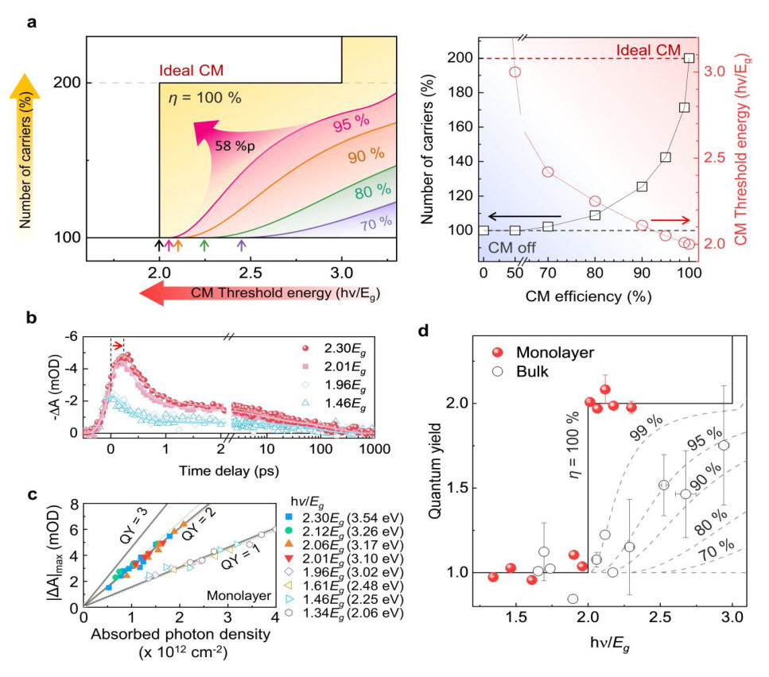
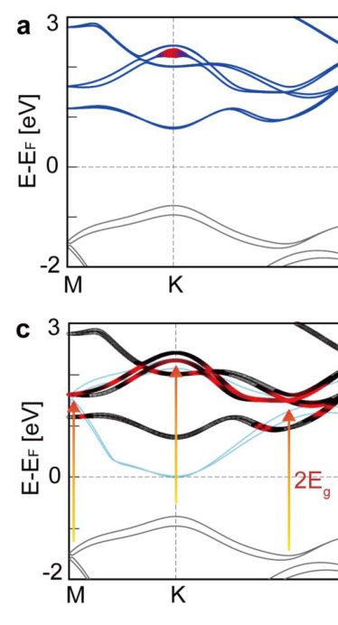
Summary. This work demonstrates that monolayer MoSe2 can achieve ideal Carrier Multiplication efficiency, a key step toward next-generation photovoltaics. This breakthrough is attributed to the material's unique electronic structure, specifically 2Eg band nesting, combined with superior hot-carrier dynamics characterized by ballistic transport. The combination of theory and ultrafast spectroscopy validates MoSe2 as a highly promising platform for energy conversion.
Why it may be interesting. The study provides a clear, measurable pathway (ballistic transport and band nesting) to engineer high-efficiency energy conversion materials, which is relevant to open quantum systems where energy dissipation and transport dynamics are central.
Main problem. The primary goal is to achieve ideal Carrier Multiplication (CM) efficiency in photovoltaic applications to surpass the Shockley-Queisser limit.
Main result. Monolayer MoSe2 demonstrates ideal CM efficiency, attributed to superior hot-carrier dynamics (ballistic transport) and favorable band nesting, significantly outperforming bulk MoSe2.
Method. The study combines ultrafast transient absorption spectroscopy (experiment) with first-principles DFT calculations (theory) to characterize carrier dynamics and electronic structure.
Model / system. The system under study is monolayer and bulk MoSe2, a transition metal dichalcogenide (TMD). The analysis focuses on hot-carrier transport, CM pathways enabled by 2Eg band nesting, and the suppression of energy loss mechanisms.
Key observables. Ideal CM efficiency (quantified by QY doubling at 2Eg), hot-carrier diffusion coefficient (D), ballistic transport exponent (beta), and the number of CM channels N(I1).
Important parameters / regimes. The critical energy threshold is twice the bandgap (2Eg); high diffusion coefficients (up to 1.0 x 10^4 cm^2 s^-1) and ballistic transport regimes are key parameters.
Assumptions / limitations. The analysis assumes the ability to resolve scatter-free ballistic transport of hot carriers and that low photon density minimizes nonlinear effects.
Figures summary. Figures illustrate the quantized jump in quantum yield at 2Eg, the comparison of CM efficiency across different dimensionalities, and spatiotemporal maps comparing ballistic vs. diffusive hot-carrier spreading in monolayer vs. bulk materials.
Paper structure. The paper progresses by first establishing the theoretical benchmark for ideal CM, then using ultrafast spectroscopy to demonstrate this ideal efficiency in monolayer MoSe2, followed by detailed analysis using DFT to explain the mechanism via band nesting and hot-carrier diffusion measurements to confirm the role of ballistic transport.
Carrier multiplication (CM), the process of generating multiple charge carriers from a single photon, offers an opportunity to exceed the Shockley-Queisser limit in photovoltaic applications. Despite extensive research, no material has yet achieved ideal CM efficiency, primarily owing to significant energy losses from carrier-lattice scattering. In this study, we demonstrate that monolayer MoSe2 can attain the theoretical maximum CM efficiency permitted by energy-momentum conservation principle, using ultrafast transient absorption spectroscopy. By resolving the scatter-free ballistic transport of hot carriers and validating our findings with first-principles calculations, we identify the cornerstone of optimal CM in monolayer MoSe2: superior hot-carrier dynamics characterized by suppressed energy dissipation via minimized carrier-lattice scattering, and the availability of abundant CM pathways facilitated by 2Eg band nesting. Comparative analysis with bulk MoSe2 further emphasizes the enhanced CM efficiency in the monolayer, attributed by superior hot-carrier diffusion and access to additional CM pathways. These results position monolayer MoSe2 as a promising candidate for high-performance optoelectronic applications, providing a robust platform for next-generation energy conversion technologies.
Authors: Aniruddha Chakraborty, Kanishk Modi, Dhritiman Bhattacharya, Uditendu Mukhopadhyay, Suddhasatta Mahapatra, Jayasimha Atulasimha
Type: theory · Category: quantum information and computing · PDF: https://arxiv.org/pdf/2606.00824v1
Analysis basis: full PDF text, analyzed in chunks
Topic relevance: spintronics-quantum-optics interface 3/5 · QC/QI experiment 2/5
Summary. This paper proposes using spin-orbit-torque (SOT)-driven nanomagnets to generate localized, oscillating magnetic fields for controlling spin qubits. By simulating the system dynamics, the authors demonstrate that this method achieves fast gate operations and long coherence times, offering a highly scalable alternative to current quantum control techniques.
Why it may be interesting. This work directly addresses the physical implementation challenges of solid-state quantum computing by proposing a scalable, CMOS-compatible method for coherent qubit manipulation using spintronics.
Main problem. The core challenge is achieving fast, high-fidelity spin rotation (SR) for quantum gates in spin qubits while minimizing decoherence caused by external magnetic fields.
Main result. The proposed technique using SOT-driven nanomagnets generates highly localized, oscillating magnetic fields that enable fast Rabi frequencies (e.g., 52.25 MHz) and maintain long coherence times ($T_2^* \sim 40-250 \mu s$), rivaling or exceeding existing methods.
Method. The authors simulate the system dynamics using micromagnetics (LLG equation) to model the SOT-driven magnetization precession, which generates the oscillating stray B-field used to drive the qubit.
Model / system. The system involves spin qubits in semiconductor quantum dots controlled by oscillating magnetic fields generated by SOT-driven nanomagnets (Co-Ni/Pt/W). The control mechanism relies on the Spin-Hall effect generating a torque on the nanomagnet's magnetization.
Key observables. Rabi frequency ($f_R$), coherence time ($T_2^*$), and the spatial profile of the oscillating magnetic field.
Important parameters / regimes. RF charge current ($I_c = 200 \mu ext{A}$), nanomagnet dimensions (e.g., 100 nm $ imes$ 80 nm), and the target ESR frequency ($\approx 5.6$ GHz).
Assumptions / limitations. The analysis assumes that the primary decoherence source is related to the gradient of the static stray field, and that higher harmonics of the oscillating field have negligible impact on fidelity.
Figures summary. Figures compare Rabi oscillations showing high fidelity (99.99%) under resonant driving, and plot $T_2^*$ and decoherence rate contributions ($\Gamma_X, \Gamma_Y$) based on the placement of multiple nanomagnets.
Paper structure. The paper progresses by first establishing the need for better SR control, detailing the SOT-driven mechanism via micromagnetics simulations, and finally quantifying the performance by calculating Rabi frequencies and coherence times ($T_2^*$) compared to established methods like EDSR.
Spin rotation (SR) is an essential capability for realization of single and two-qubit gates in spin quantum computing (SQC) architectures. To perform SR, resonant AC magnetic fields are either generated by microwave current pulses fed to an antenna, or voltage pulses applied to a gate, in presence of an inhomogeneous Zeeman field. While the former approach is limited by gate-speed and site-selectivity of SR, the latter adds to the decoherence of the spin qubits. Here, we propose an alternative technique for driving high-speed SR without compromising the qubit coherence, by employing spin-orbit-torque (SOT)-driven nanomagnets to produce oscillating magnetic fields, locally at the qubit site. The proposed scheme is highly energy-efficient, scalable, and compatible with the CMOS fabrication technology.
Authors: Dmitriy Ksenzov, Flavio Capotondi, Nicolas Jaouen, Raphael Gruber, Vincent Cros, Mathias Kläui, Matteo Pancaldi, Emanuele Pedersoli, Nicolas Reyren, Christian Gutt
Type: experiment · Category: other · PDF: https://arxiv.org/pdf/2606.02154v1
Analysis basis: full PDF text, analyzed in chunks
Topic relevance: spintronics-quantum-optics interface 3/5 · non-equilibrium dynamics 1/5
Summary. This work uses time-resolved X-ray Magnetic Scattering (XRMS) to investigate how chiral domain walls evolve on picosecond timescales. By analyzing the dichroic signal, the researchers successfully isolated the dynamics of the internal domain-wall mode. The key finding is that this mode's oscillation frequency softens as the pump fluence increases, providing insight into how external energy modifies the magnetic anisotropy and restoring forces within the domain walls.
Why it may be interesting. The use of time-resolved X-ray techniques to isolate and track internal, collective excitations (like domain-wall modes) in magnetic materials provides a powerful, non-equilibrium probe of magnetic order parameters, relevant to understanding ultrafast magnetization dynamics.
Main problem. The study aims to probe the ultrafast internal dynamics of chiral domain walls within magnetic multilayers on picosecond timescales.
Main result. The dichroic signal exhibits a strong oscillatory response whose frequency decreases with increasing pump fluence, indicating pump-induced changes in the effective anisotropy and saturation magnetization that modify the internal domain-wall mode restoring field.
Method. Time-resolved x-ray resonant magnetic scattering (XRMS) is employed using femtosecond optical pumping and circularly polarized FEL probes.
Model / system. The physical system involves magnetic multilayers with perpendicular magnetic anisotropy hosting chiral Néel-type domain walls stabilized by the interfacial Dzyaloshinskii-Moriya interaction. The in-plane wall magnetization is modeled using a 1D Walker domain-wall profile.
Key observables. Helicity-summed signal ($\Delta I_+$) and the dichroic signal ($I_-$), which is sensitive to the in-plane magnetization inside the Néel walls.
Important parameters / regimes. Picosecond time scales, pump fluence, and the characteristic frequency of the internal domain-wall mode.
Assumptions / limitations. The analysis assumes the dichroic term arises from charge-magnetic interference, and the frequency dependence on fluence is treated phenomenologically.
Figures summary. Figures show time-momentum maps and azimuthally integrated transient dichroic responses demonstrating the fluence dependence of the oscillation frequency for different samples.
Paper structure. The paper details the experimental setup and diagnostics, analyzes the time-resolved signals by separating contributions, and presents the quantitative findings regarding the frequency softening of the internal domain-wall mode.
We measure picosecond dynamics of labyrinthine stripe domains with chiral Néel-type domain walls using time-resolved x-ray resonant magnetic scattering (XRMS). At the stripe-domain wavevector, the helicity-summed signal shows ultrafast demagnetization, recovery, and a weak oscillatory contribution that we identify as a signature of laser-launched coherent surface phonons. In contrast, the dichroic signal, which is sensitive to the in-plane magnetization inside the Néel walls, shows a strong oscillatory response whose frequency decreases with increasing pump fluence. We attribute this softening to pump-induced changes in the effective anisotropy and saturation magnetization, which modify the restoring field of an internal domain-wall mode. Time-resolved XRMS thus isolates wall-specific dynamics and provides access to internal domain-wall motion in disordered stripe textures on picosecond time scales.
Authors: Michael Pfeufer, Patrick Grenzer, Friedrich Schöppler, Tobias Hertel
Type: both · Category: other · PDF: https://arxiv.org/pdf/2606.00682v1
Analysis basis: full PDF text, analyzed in chunks
Topic relevance: interference shaping light 3/5
Summary. This paper investigates the optical response of $( ext{PEA})_2 ext{PbI}_4$ perovskite slabs, demonstrating a thickness-dependent transition from simple excitonic absorption to a visible-frequency stop band. By modeling the dielectric response with a Lorentz oscillator, the authors confirm the existence of a negative real permittivity window, classifying the material as a natural excitonic Reststrahlen medium.
Why it may be interesting. This work directly addresses the strong light-matter coupling regime in solid-state materials, providing experimental and theoretical evidence for an excitonic stop band analogous to the infrared Reststrahlen effect, which is highly relevant to quantum optics and photonics.
Main problem. The study aims to determine if the intrinsic exciton oscillator strength in layered perovskites is sufficient to drive the real permittivity ($ ext{Re}(\epsilon)$) negative, thereby creating a visible-frequency excitonic Reststrahlen-like stop band.
Main result. The authors show that $( ext{PEA})_2 ext{PbI}_4$ slabs exhibit a thickness-dependent crossover from an excitonic dip to a broad near-zero-transmission interval, confirming its status as a cavity-free visible-frequency excitonic Reststrahlen material.
Method. The research combines low-temperature transmission spectroscopy of varying thickness slabs with transfer-matrix analysis using an effective Lorentz-oscillator dielectric response model.
Model / system. The physical system is the layered halide perovskite $( ext{PEA})_2 ext{PbI}_4$. The optical response is modeled using a Lorentz-oscillator form for the dielectric function, $\epsilon(E)$, which is then propagated through the slab thickness using transfer-matrix methods.
Key observables. Transmittance spectra, the development of a finite negative-$ ext{Re}(\epsilon)$ window, suppressed in-plane field penetration ($|E_\parallel|^2$), and enhanced surface-normal field ($|E_\perp|^2$).
Important parameters / regimes. Low temperature (10 K), slab thickness ($d$), and the Rabi splitting ($\hbar\Omega_R \approx 0.5 ext{ eV}$).
Assumptions / limitations. The analysis assumes the intralayer exciton manifold is the dominant oscillator driving the optical response, and the negative permittivity window is responsible for the stop-band behavior.
Figures summary. Figures illustrate the thickness-dependent crossover from an excitonic dip to a stop-band, the reconstructed negative-$ ext{Re}(\epsilon)$ window, and calculated field maps showing field suppression/enhancement within this band.
Paper structure. The paper progresses by first observing the thickness-dependent spectral evolution (experiment), then modeling this crossover using a Lorentz-oscillator dielectric response (theory), and finally interpreting the resulting negative permittivity as evidence for a visible-frequency excitonic Reststrahlen band.
Layered halide perovskites host exceptionally strong excitons, whose optical signatures are usually interpreted as absorptive resonances on a smooth dielectric background. Strong excitons, however, can also reshape the dielectric response itself and drive the real permittivity negative, opening a reflective band: the visible, excitonic analogue of an infrared Reststrahlen band. Whether bare (PEA)$_2$PbI$_4$ slabs reach this regime has remained unclear. Here we show that low-temperature transmission of (PEA)$_2$PbI$_4$ slabs, driven by the intralayer-exciton manifold, evolves with increasing thickness from an excitonic dip into a broad near-zero-transmission interval with compressed Fabry-Pérot-like fringes. Transfer-matrix analysis with an effective Lorentz-oscillator dielectric response reproduces this crossover, reconstructs a finite negative-Re($\varepsilon$) window, and implies near-ultrastrong exciton-photon coupling. Calculated field maps show suppressed in-plane field penetration within this interval and a driven longitudinal response near the high-energy ($\varepsilon=0$) edge. These results identify (PEA)$_2$PbI$_4$ slabs as a cavity-free visible-frequency excitonic Reststrahlen material.
Authors: Hankyul Koh, Wonho Jhe
Type: theory · Category: other · PDF: https://arxiv.org/pdf/2606.00681v1
Analysis basis: full PDF text, analyzed in chunks
Topic relevance: Keldysh / 2PI / non-Gaussian methods 2/5 · entanglement & information structure 2/5 · methods for driven-dissipative 2/5 · analog quantum simulation 1/5 · correlated / nonlocal dissipation 1/5 · driven-dissipative phase transition 1/5 · measurement-induced transitions 1/5 · non-equilibrium dynamics 1/5 · non-equilibrium universality 1/5 · quantum measurements 1/5
Summary. This paper introduces a unified continuum electroelastic theory to accurately model the electrical resonance spectra of quartz tuning forks. It demonstrates that the measurable electrical signal depends critically on the overlap between the mechanical mode's excitation strength and the electrode's readout efficiency. This provides a rigorous, first-principles basis for precision electromechanical characterization of piezoelectric resonators.
Why it may be interesting. While focused on classical solid-state physics, the rigorous mathematical framework of projecting a complex coupled system onto observable subspaces, and quantifying observability via overlap integrals, shares conceptual parallels with analyzing coupling strengths in open quantum systems or cavity QED.
Main problem. Existing theories fail to explain the robust, electrode-dependent features observed in the electrical resonance spectra of quartz tuning forks (QTFs).
Main result. The measured electrical response requires non-zero overlap in both the excitation ($\Theta$) and readout ($H$) coupling terms, providing a unified framework for electromechanical characterization.
Method. The authors developed a unified continuum electroelastic framework by combining piezoelectric electrodynamics, variational structural dynamics, and symmetry-selected observability.
Model / system. The system is a quartz tuning fork, modeled as an electrically driven piezoelectric resonator. The theory uses continuum mechanics and projects the full electroelastic problem onto reduced mechanical and electrode-defined subspaces.
Key observables. Electromechanical Visibility ($V_n$), Effective Excitation ($\Theta_{ ext{eff}n\ell}$), Effective Readout ($H_{ ext{eff}\ell n}$), and the measured current $ ilde{I}_{ ext{meas}}(\omega)$.
Important parameters / regimes. Resonance frequencies ($\omega_n$), damping rates ($\gamma_n$), and coupling coefficients derived from the material's piezoelectric tensor ($e_{kij}$).
Assumptions / limitations. The electric field adjusts instantaneously to electrode boundary conditions because the mechanical resonance frequency is much lower than the electromagnetic propagation timescale.
Figures summary. Figure 1 compares wide-band electrical spectra under mass loading, showing the evolution of mechanical poles versus observed electrical peak trajectories.
Paper structure. The paper develops the unified electroelastic theory, derives the effective coupling operators ($\Theta, H$), and then applies perturbation theory to analyze how imperfections (mass loading, nonuniformity) affect the measurable spectral weight and pole positions.
Quartz tuning forks, functioning as electrically driven piezoelectric resonators, have long served as exceptionally stable and widely adopted timing references in diverse domains of research and industry. Yet, electrically measured resonance spectra often exhibit robust features that remain unexplained within existing theoretical descriptions. Here we develop a unified continuum electroelastic framework that combines piezoelectric electrodynamics, variational structural dynamics, and symmetry-selected electromechanical observability. Such a first-principles theory shows quantitative agreement with experimental results, which demonstrates electrical observability emerges not just from the underlying mechanical eigenmodes alone. Our results provide a unified framework for electrically driven piezoelectric resonators as well as a rigorous basis for precision electromechanical characterization.
Authors: Thibault Bonnemain, François Copie, Pierre Suret, Stéphane Randoux
Type: theory · Category: statistical mechanics · PDF: https://arxiv.org/pdf/2606.02043v1
Analysis basis: full PDF text, analyzed in chunks
Topic relevance: non-equilibrium dynamics 2/5 · Keldysh / 2PI / non-Gaussian methods 1/5
Summary. This paper develops a microscopic, field-based theory for interacting KdV solitons by deriving exact charge, current, and velocity fields from the Inverse Scattering Transform. It successfully tracks individual solitons through complex interactions, demonstrating that the system's collective behavior naturally recovers established macroscopic theories like Generalized Hydrodynamics. This unifies wave-based and particle-like descriptions of soliton dynamics.
Why it may be interesting. The connection drawn between the wave-based IST formalism and emergent particle-like descriptions, especially the recovery of kinetic theory, provides a powerful, unified framework for understanding non-equilibrium dynamics in nonlinear wave systems relevant to AMO and quantum optics.
Main problem. The primary challenge is developing a microscopic framework to track individual solitons as distinct entities during strong interactions, moving beyond the limitations of asymptotic approximations.
Main result. The authors establish that the dynamics of interacting solitons can be described by independent continuity equations for their charges, leading to the recovery of kinetic theory and Generalized Hydrodynamics (GHD) as scaling limits.
Method. The work utilizes the Inverse Scattering Transform (IST) of the Korteweg-de Vries (KdV) equation to derive exact space-time fields for charge, current, and velocity associated with individual solitons.
Model / system. The system under study is the interaction of Korteweg-de Vries (KdV) solitons. The analysis develops a field-based description using conserved quantities derived from the IST spectral framework.
Key observables. Charge density ($Q_m$), current density ($J_m$), and the derived velocity field ($v_m$) of individual solitons.
Important parameters / regimes. The analysis explores different regimes, including the strongly interacting regime, the rarefied gas regime, and the thermodynamic limit ($N o \infty$).
Assumptions / limitations. The framework assumes that the dynamics can be decomposed into independent evolutions for each soliton's charge, with interactions being encoded in initial correlations.
Figures summary. Figures illustrate the computed charge, current, and velocity fields during soliton interactions, showing localization and perturbation. Other figures compare exact characteristic trajectories against approximations derived from effective velocity theories.
Paper structure. The paper progresses from defining the microscopic field description using IST to deriving continuity equations for individual soliton charges. It then shows how these equations yield effective velocity fields, ultimately connecting the microscopic description to macroscopic kinetic theories like GHD.
Solitons in integrable systems exhibit a dual wave-particle character, yet their identification as individual objects becomes ambiguous during interactions, where they deform and delocalize. We develop a microscopic, field-based description that resolves this issue by introducing exact space-time fields of charge, current, and velocity derived from the inverse scattering transform (IST) of the Korteweg-de Vries (KdV) equation. This framework enables individual KdV solitons to be tracked throughout interactions, providing a quantitative description of their trajectories and deformation beyond the asymptotic regime. We show that the dynamics of $N$ interacting solitons can be formulated in terms of $N$ independent continuity equations, in which interactions are encoded in initial correlations that are subsequently propagated. From this microscopic viewpoint, effective velocities and hydrodynamic behavior emerge upon coarse graining, recovering kinetic theory of soliton gases and Generalized Hydrodynamics as scaling limits. Our results establish a direct connection between the wave-based IST formalism and particle-like emergent descriptions, offering a unified framework for soliton dynamics across scales.
Authors: Francesco Buccheri, Alessandro de Martino, Jeroen van den Brink
Type: theory · Category: other · PDF: https://arxiv.org/pdf/2606.02371v1
Analysis basis: full PDF text, analyzed in chunks
Topic relevance: Keldysh / 2PI / non-Gaussian methods 2/5
Summary. This work theoretically explains how phonon interactions, combined with Coulomb repulsion, can induce superconductivity exclusively on the topological Fermi arcs of Weyl semimetals. The key finding is that weak surface screening favors an inter-arc pairing channel, which results in the observationally important nodal superconducting gap structure. This suggests that surface engineering of the dielectric environment can control the superconducting properties.
Why it may be interesting. The detailed theoretical framework for deriving pairing mechanisms from lattice vibrations and surface topology is highly relevant for understanding emergent superconducting states in topological materials, bridging concepts from lattice dynamics and superconductivity theory.
Main problem. The paper addresses the mechanism driving the formation of a superconducting gap specifically on the topological surface states (Fermi arcs) of Weyl semimetals, while the bulk remains non-superconducting.
Main result. Nodal superconductivity arises generically from the combination of phonon-mediated attraction and weakly screened long-range Coulomb repulsion acting on disconnected Fermi-arc segments.
Method. The authors use a continuum description, deriving effective electron-electron interactions (Coulomb and electron-phonon) and solving the resulting gap equation in the mean-field approximation.
Model / system. The system is time-reversal-invariant Weyl semimetals, modeled using a tight-binding approach that yields surface Fermi arcs. The theory incorporates coupling to both surface and bulk phonons and long-range Coulomb interactions.
Key observables. Superconducting gap structure (nodal vs. nodeless), critical temperature ($T_c$), and the relative strengths of intra-arc and inter-arc pairing channels.
Important parameters / regimes. Coulomb screening strength ($q_s$), phonon frequencies ($\omega$), and the geometry of the Fermi arcs.
Assumptions / limitations. The bulk density of states is negligible compared to the surface DOS near the chemical potential, and the analysis relies on linearizing the gap equation near $T_c$.
Figures summary. Figures illustrate the Fermi arcs in the surface Brillouin zone, the competition between intra-arc and inter-arc scattering processes, and the dependence of $T_c$ on the screening momentum.
Paper structure. The paper progresses by first deriving the electronic structure and the electron-phonon coupling Hamiltonian, then formulating the effective electron-electron interaction, and finally solving the gap equation by distinguishing between intra-arc and inter-arc pairing channels to determine the superconducting gap symmetry and $T_c$.
According to recent observations, the topological surface states of Weyl semimetals may develop a superconducting gap, while bulk superconductivity remains absent. What drives the formation of this novel superconducting state is an open question. Here, we show that this phenomenon can arise from the interaction of Fermi arc electrons with both surface and bulk phonons in time-reversal-invariant Weyl semimetals. We identify two competing pairing channels, intra-arc and inter-arc, whose relative strength is governed by the efficiency of Coulomb screening at the surface. The combined effect of the Fermi arcs being disconnected and the weak screening of the Coulomb repulsion at the system's surface causes nodes to appear in the superconducting gap, as observed recently by photoelectron spectroscopy experiments on PtBi2. This suggests manipulation of the Coulomb screening, e.g. by a surface layer coating, as a pathway to engineer the critical temperature, as well as size and symmetry of the surface superconducting gap.
Authors: O. S. Ken, D. O. Horiachyi, V. L. Korenev, A. V. Trifonov, I. A. Akimov, D. R. Yakovlev, M. Bayer
Type: experiment · Category: other · PDF: https://arxiv.org/pdf/2606.02012v1
Analysis basis: full PDF text, analyzed in chunks
Topic relevance: Frenkel-Kontorova 1/5 · analog quantum simulation 1/5 · driven-dissipative phase transition 1/5 · interference shaping light 1/5 · non-equilibrium dynamics 1/5 · quantum optics experiment 1/5
Summary. This work demonstrates a novel method to enhance the detection of coherent acoustic phonons in semiconductors by generating a propagating acoustic grating using a high-repetition-rate laser pulse train. By exploiting Bragg reflection, the Brillouin light scattering signal is resonantly enhanced by factors up to 30 times compared to single-pulse excitation. This technique provides a highly sensitive tool for studying high-frequency acoustic dynamics in solid-state materials.
Why it may be interesting. The use of periodic excitation to engineer a macroscopic optical/acoustic resonance (Bragg enhancement) is a powerful analogy to engineered quantum systems, particularly in cavity QED or photonic structures, demonstrating controlled enhancement of a fundamental physical signal.
Main problem. The study aims to enhance the detection of Brillouin light scattering (BLS) from coherent acoustic phonons in semiconductors by utilizing a propagating acoustic grating.
Main result. The multi-pulse approach generates a propagating acoustic grating, leading to a significant resonant enhancement of the BLS signal, observed to be 10-30-fold in GaAs and (Cd,Zn)Te.
Method. The technique involves using a high-repetition-rate laser pulse train to create the grating, followed by time-domain Brillouin scattering measurements in a pump-probe configuration.
Model / system. The experiment is performed on bulk semiconductors (GaAs and (Cd,Zn)Te) at cryogenic temperatures, utilizing a two-color differential reflectivity pump-probe setup.
Key observables. Resonant peaks in the spectral dependence of the TDBS amplitude, the acoustic phonon frequency (f_ac), and the enhancement factor.
Important parameters / regimes. The enhancement factor is limited by the number of strain pulses (N) and the finite spectral width of the probe pulse; the resonance condition is governed by the Bragg reflection relation.
Assumptions / limitations. The analysis models the signal using a geometric series sum for the total scattered field, assuming normal incidence of the probe beam.
Figures summary. Figures illustrate the comparison between conventional single-pulse and multi-pulse TDBS approaches, and show the spectral dependence of the enhanced signal.
Paper structure. The paper progresses from introducing the concept of coherent phonon generation to detailing the multi-pulse grating formation, deriving the enhanced signal mathematically via geometric series summation, and finally presenting experimental results on GaAs and (Cd,Zn)Te.
Generation and detection of coherent phonons in semiconductors by femtosecond optical pulses is a powerful tool for high-frequency acoustic control of their electronic properties. Here, we demonstrate a propagating one-dimensional acoustic grating in bulk semiconductors using above-band-gap excitation by a train of laser pulses with high repetition rate of 1 GHz. This approach enables shaping of the coherent acoustic phonon spectrum and leads to a significant enhancement of Brillouin light scattering at selected probe wavelengths in pump-probe configuration. We demonstrate this effect at a cryogenic temperature of 5 K in prototypical semiconductor systems, namely bulk crystalline GaAs and (Cd,Zn)Te, which serve as benchmark materials for the proposed method. The spectral dependence of the time-domain Brillouin light scattering amplitude exhibits resonant peaks at discrete probe wavelengths arising from Bragg reflection of the probe light by the propagating acoustic grating. A 10-30-fold resonant enhancement of the signal amplitude is observed for GaAs and (Cd,Zn)Te, determined by the finite spectral width of the probe pulse. With further spectral narrowing, enhancements of the order ~ 100-150 are expected, set by the number N of strain pulses in the acoustic grating within the sample and ultimately limited by the material parameters and sample thickness.
Authors: Haoyang Qian, Beata Casiday, Gabriel Hood, Malbor Asllani
Type: theory · Category: disordered systems and neural networks · PDF: https://arxiv.org/pdf/2606.01735v1
Analysis basis: full PDF text, analyzed in chunks
Topic relevance: correlated / nonlocal dissipation 1/5 · driven-dissipative phase transition 1/5 · methods for driven-dissipative 1/5 · non-equilibrium dynamics 1/5 · non-equilibrium universality 1/5
Summary. This work introduces a node-resolved framework to analyze collective dynamics in complex networks by exploiting spectral localization in the graph Laplacian. By showing that structural disorder concentrates spectral modes onto specific nodes, the authors allow stability analysis to be performed directly in physical node space rather than abstract spectral space. This restores physical interpretability and predicts the onset and nature of emergent collective behaviors.
Why it may be interesting. The concept of spectral localization and mapping abstract spectral modes back to physical nodes is a powerful tool for interpreting complex, high-dimensional dynamics, which has parallels in understanding collective excitations in quantum many-body systems.
Main problem. The paper addresses how to restore physical interpretability to collective dynamics in complex, heterogeneous systems whose stability is traditionally analyzed only in abstract spectral space.
Main result. Structural disorder in networks induces spectral localization, allowing stability properties to be interpreted directly in node space and enabling the identification of specific nodes driving collective transitions.
Method. The authors develop a node-resolved framework by exploiting spectral localization of the graph Laplacian eigenvectors to decouple the full system Jacobian into localized, node-dependent components.
Model / system. The analysis uses general networked systems, exemplified by reaction-diffusion models (like the Brusselator) and SIS dynamics, coupled via the network Laplacian structure.
Key observables. Localized Master Stability Function (MSF), Mean Normalized Eigenvalue Error (MNE), and the identification of dominant nodes responsible for instability.
Important parameters / regimes. Network size (N), parameter heterogeneity (s), and the coupling structure (Adjacency vs. Laplacian).
Assumptions / limitations. The core assumption is the existence of strong spectral localization, which allows the complex dynamics to be accurately approximated by local dynamics governed by a 'host node.'
Figures summary. Figures illustrate mode-node mapping via heatmaps of Laplacian eigenvectors, compare MNE across different network types (ER, BA, real-world), and show time series demonstrating various collective states like amplitude chimera and oscillon patterns.
Paper structure. The paper progresses from establishing the failure of classical spectral theory to proposing the localization-based node-resolved framework. It then applies this framework to analyze stability, predict transition onsets, and characterize various nonlinear collective states (e.g., chimera states) based on the localized spectrum.
Real complex systems often exhibit collective transitions emerging from interactions across many components. Classical stability theory describes such transitions in spectral space, where dynamics is organized by spatially extended global eigenmodes whose collective nature obscures direct association with individual physical components. Here, we show that structural disorder in empirical random networks can fundamentally alter this picture. These properties induce spectral localization, causing Laplacian modes to concentrate on small subsets of nodes and producing a mode--node correspondence in which collective dynamics becomes governed predominantly by the local behavior of a dominant node together with their effective coupling to the surrounding network. As a consequence, stability properties can be interpreted directly in node space rather than purely in spectral space. Exploiting this principle, we develop a node-resolved framework that predicts transition onsets, identifies the nodes responsible for emergent collective behavior, and restores interpretability in systems where classical modal theories fail. In heterogeneous reaction networks, the same mechanism gives rise to exotic collective states where different subsets of nodes develop distinct dynamical behaviors beyond those associated with homogeneous assumptions. Our results show that complex network structures naturally generate spectral localization, revealing the microscopic drivers of macroscopic dynamics.
← Index · ← Previous · Next →